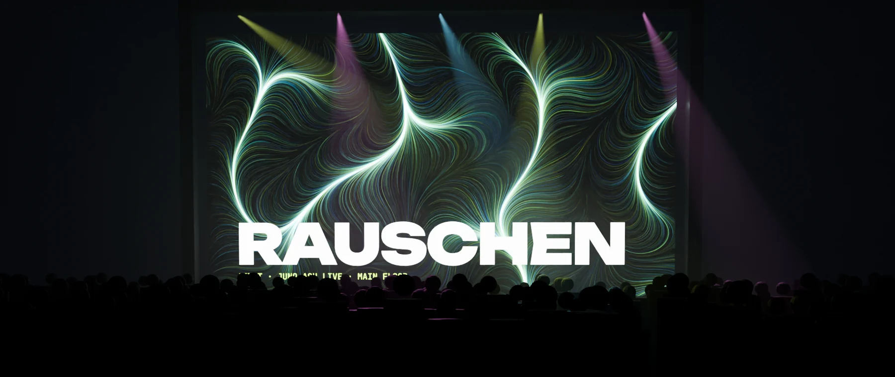
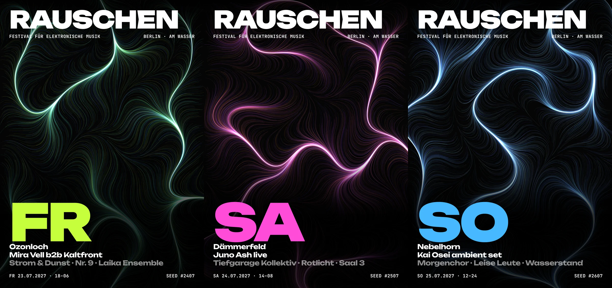
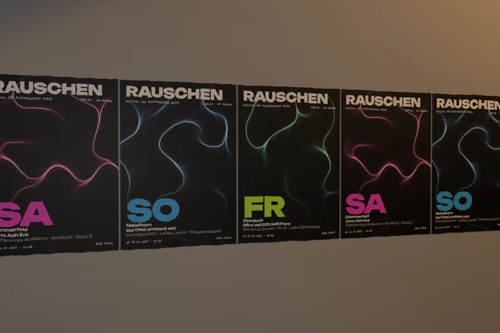
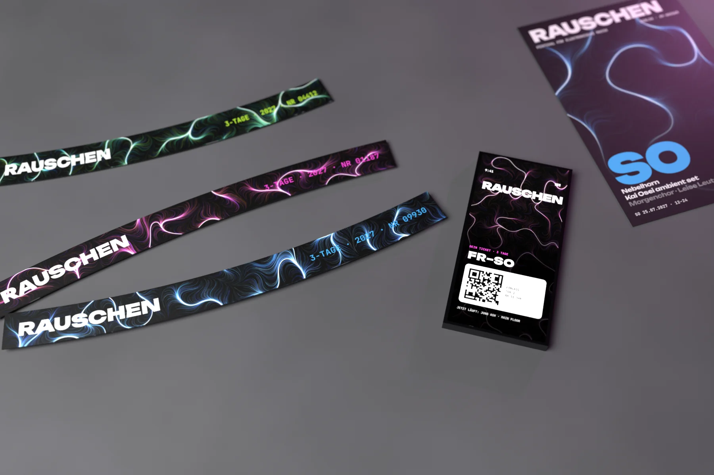
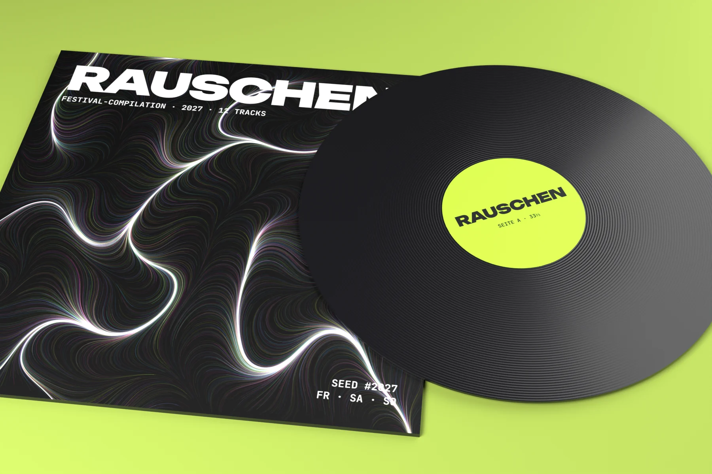

RAUSCHEN (German for noise or static) is a fictional three-day festival for electronic music in Berlin. Its graphics are not drawn by hand. They are generated by code from a number, a seed, so every day, ticket and screen gets its own field of light while still looking like one family.

Festival identities usually freeze one key visual and print it everywhere. But this music is about repetition with small changes, loops that drift. I wanted a system with the same logic: fixed rules, endless variations, and a clear link between what you see on the street and what you see on stage.
Posters, wristbands, screens and social posts from one generator.
Friday, Saturday and Sunday each get their own colours and seed.
The same code draws a still poster or a moving stage visual.
Thousands of lines follow an invisible noise field. Where many lines meet, the light adds up and bright rivers appear. The seed decides the shape of the field, so the same seed always gives the same poster. That makes every print reproducible.
Unbounded Black. Wide and loud, readable from the back of a field.
JetBrains Mono for dates, times and seeds. It looks like data, because it is.

Day postersSame layout, same rules, different seed and colours. The lineup sits on a dark gradient so it stays readable over any field.
Main stageOn the LED wall the field moves slowly and shows who is playing now. The same code as the posters, running in real time.

Street postersPasted in rows, the three days build a colour rhythm.

Wristbands and app ticketEach wristband is cut from a different part of the field and carries its own number.

Festival compilation LPAll three day colours mixed together add up to white light. The sleeve shows seed #2027, the festival year.